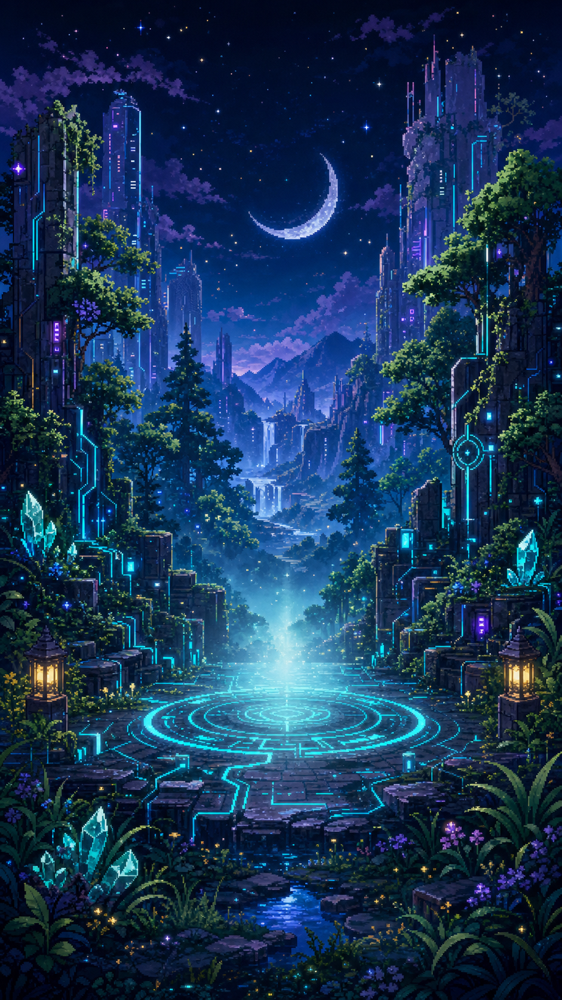

Life Quest Console
若林 勝則
Lv.24HP64
MP72
ST48
Cash¥3,200
World Clarity28%

WORLD CLARITY 28%
Lv.3 HERO HOME
HP 64/100
MP 72/100
ST 48/100
Cash ¥3,200
Resolution Upgrade
World Clarity 28%
世界解像度進化
現在：Lv.3 冒険者ホーム起動
次：Lv.4 透明HUD解放
条件：言語化EXP 50 / Focus Quest 3回 / 日次ログ3回
RESOURCE
リソースゲージ
体力・肉体疲労・胃腸・眠気 / 体のカオスを整える
思考力・集中力・判断力 / 思考を言葉に変える
ストレス耐久・感情の余裕 / 感情の霧を受け止める
財布の中身 / お金の不安を見える化する
CHAOS TO COSMOS
World Clarity 世界解像度
Chaos 72%
28%
Cosmos 28%
言語化EXP
15 / 50
次の解像度UPまで
35EXP
現在の世界状態：Lv.3 冒険者ホーム起動
なんとなく不安、疲れ、未整理
言葉にして名前をつける
次の行動に変換する
生活の地図が鮮明になる
BASE STATUS
基礎ステータス
STR 体力48
LNG 言語力84
INS 洞察力96
LOG 論理力64
MEM 記憶力68
SPD 処理力80
MEN 精神力54
CHA 対人力58
ACT 行動力72
GRIT 執念力82
SKILL BURST
接客モード発動
通常時
基礎CHA 58
発動時
実効CHA 79
- 営業力
- Lv.2
- 営業力バフ
- +15
- LNG補正
- +4
- INS補正
- +2
LEARNED SKILLS
獲得スキル
生活安定 Lv.1
金銭安定 Lv.1
営業力 Lv.2
自己管理 Lv.1
学習力 Lv.2
発信力 Lv.1
固定費管理 Lv.0
TREASURE CONSOLE
財務ダッシュボード
Wallet Cash
¥3,200
今月残り
¥42,000
月次生活予算¥70,000
日次消化¥2,333
固定費未入力
資産未入力
長期負債未入力
短期負債¥8,625
純資産未計算
食費・飲み物・タバコ・交通費は資産ではなく、月次生活予算から毎日消化される生活コストとして扱う。
BOSS ALERT
短期負債モンスター
- 名称
- 通信費未払い
- 金額
- ¥8,625
- 期限
- 6/25
- 危険度
- 高
- 状態
- 未払い
- 撃破条件
- 支払い完了
LOGOS EXP
言語化EXP
未整理を言葉に変え、行動に変え、コスモスへ近づける。
- 体調を一言で記録+5EXP
- 感情に名前をつける+5EXP
- 不安を1つ書き出す+10EXP
- タスクを3つに分解+10EXP
- 短期負債を登録+15EXP
- 1日の振り返り+15EXP
RESOLUTION EVOLUTION
解像度進化システム
現在
Lv.3 冒険者ホーム起動
次の進化条件：言語化EXP 50 / Focus Quest 3回 / 日次ログ3回
DAILY QUEST
今日のクエスト
言語化されたカオスを、集中クエストに変換する。Quest Clearで世界解像度EXPを獲得。
- 水を飲む
- 食事を1回入れる
- 10分散歩
- 24時台に寝る
- 財布の中身を更新する
- 短期負債の期限を確認する
- 今日の感情を一言で記録する
- 不安を1つ言語化する
- 未整理タスクをクエスト化する
Status Terminal / ステータス端末
身体、思考、言語化、接客時補正をまとめて確認する冒険者端末。
STR 体力48
LNG 言語力84
INS 洞察力96
LOG 論理力64
MEM 記憶力68
SPD 処理力80
MEN 精神力54
CHA 対人力58
ACT 行動力72
GRIT 執念力82
接客モード補正
基礎CHA58
接客時 実効CHA79
- 営業力
- Lv.2
- 営業力バフ
- +15
- LNG補正
- +4
- INS補正
- +2
World Clarity / 世界解像度
言葉にするほど、世界の霧が晴れる。
Chaos 72%
28%
Cosmos 28%
言語化EXP15 / 50
次の解像度UPまで35EXP
霧のような不安や疲れ。
名前をつけて輪郭を出す。
次の一歩へ変換する。
生活の地図が鮮明になる。
Resolution Upgrade
Focus Quest
未整理のカオスを25分の集中クエストへ変換する。
現在のクエスト：通常クエスト
25:00
消費MP-10
獲得EXP+10
Skill Guild / スキルギルド
生活RPGで獲得済みのスキルと、接客時の補正を確認する。
生活安定 Lv.1
金銭安定 Lv.1
営業力 Lv.2
自己管理 Lv.1
学習力 Lv.2
発信力 Lv.1
固定費管理 Lv.0
営業力は基礎CHAに強めのバフをかけ、言語力と洞察力も接客時に補正する。
営業力 Lv.2
CHA+15
LNG+4
INS+2
接客時 実効CHA79
Alchemy Finance / 錬金術ラボ
生活コストと資産・負債の輪郭を分けて確認する管理コンソール。
Wallet Cash¥3,200
今月残り¥42,000
月次生活予算¥70,000
日次消化¥2,333
固定費未入力
資産未入力
長期負債未入力
短期負債¥8,625
純資産未計算
食費・飲み物・タバコ・交通費は資産ではなく、月次生活予算から毎日消化される。
Short Debt Boss / 短期負債ボス
怖さを増やすのではなく、倒せる課題として支払い条件を可視化する。
- 支払いボス
- 通信費未払い
- 金額
- ¥8,625
- 期限
- 6/25
- 危険度
- 高
- 状態
- 未払い
- 撃破条件
- 支払い完了
- ST影響
- -5
- MEN影響
- -2
Daily Quest / 今日のクエスト
冒険前の準備リスト。完了操作は次の実装で接続する。
- 水を飲む
- 食事を1回入れる
- 10分散歩
- 24時台に寝る
- 財布の中身を更新する
- 短期負債の期限を確認する
- 今日の感情を一言で記録する
- 不安を1つ言語化する
- 未整理タスクをクエスト化する
Chaos Log / 言語化ログ
未整理を言語化し、クエストへ変換するための記録端末。
言語化EXP獲得リスト
- 未整理：なんとなく焦っている+5EXP
- 言語化：支払い期限と作業量が重なってSTが下がっている+10EXP
- クエスト化：財布確認 → 25分Focus Quest → 水を飲む+10EXP
Manage Console / 管理
リソース、未入力、解放済み機能、次の確認項目をまとめる管理画面。
リソース一覧
HP 64 / MP 72 / ST 48 / Cash ¥3,200
今日の状態
MP高め / ST注意 / Cash少なめ
未入力項目
固定費 / 資産 / 長期負債
解放済み機能
Hero Home / Focus Quest / Chaos Log
次に確認すべき項目
短期負債の期限、財布残高、今日の感情ログ。
Settings / 設定
表示モードと未実装の連携状態を確認する静的設定画面。
表示モードLv.3 Hero Home
次の表示モードLv.4 Clear HUD
テーマCyber Nature Spiritual
データ連携未接続
LIFF未実装
GAS未実装
LINE Bot未実装